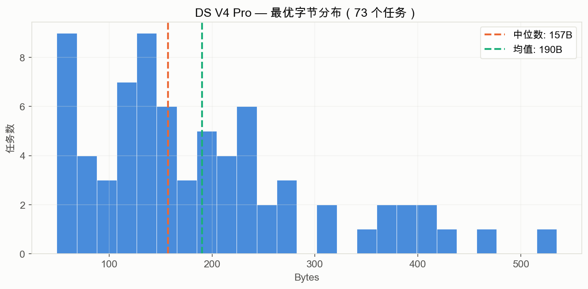
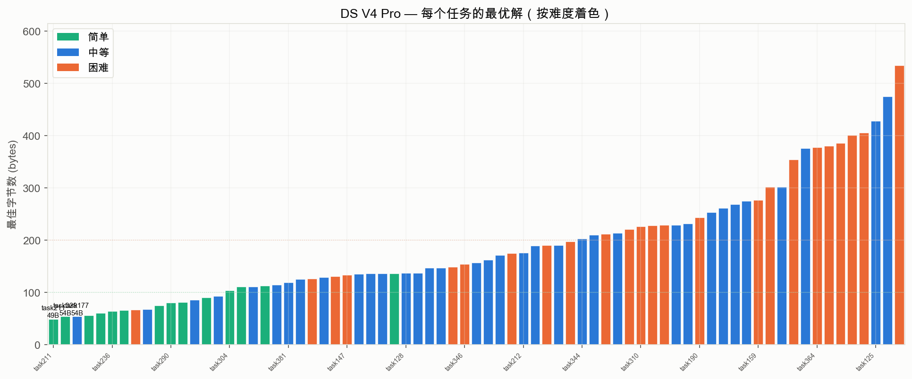
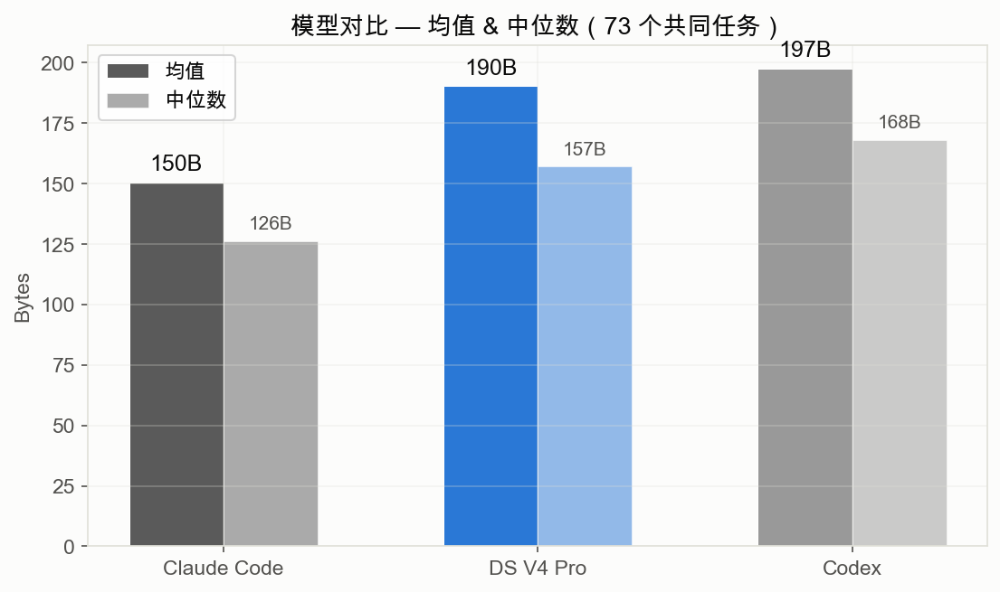
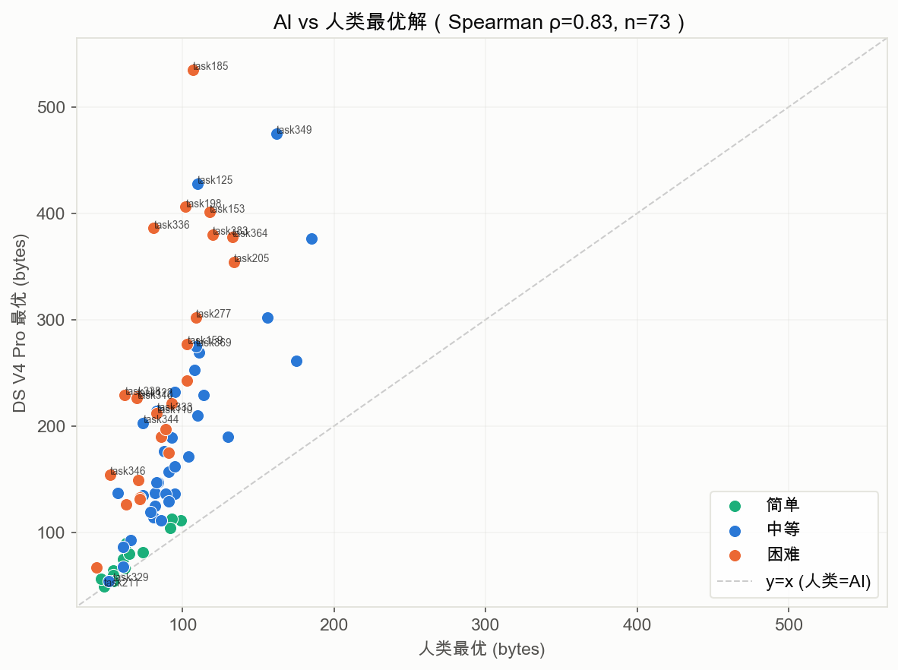
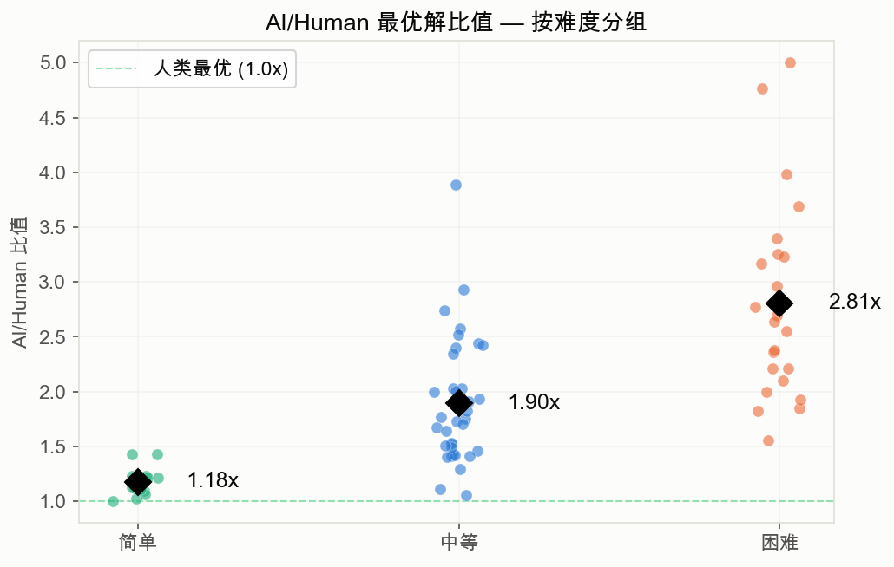
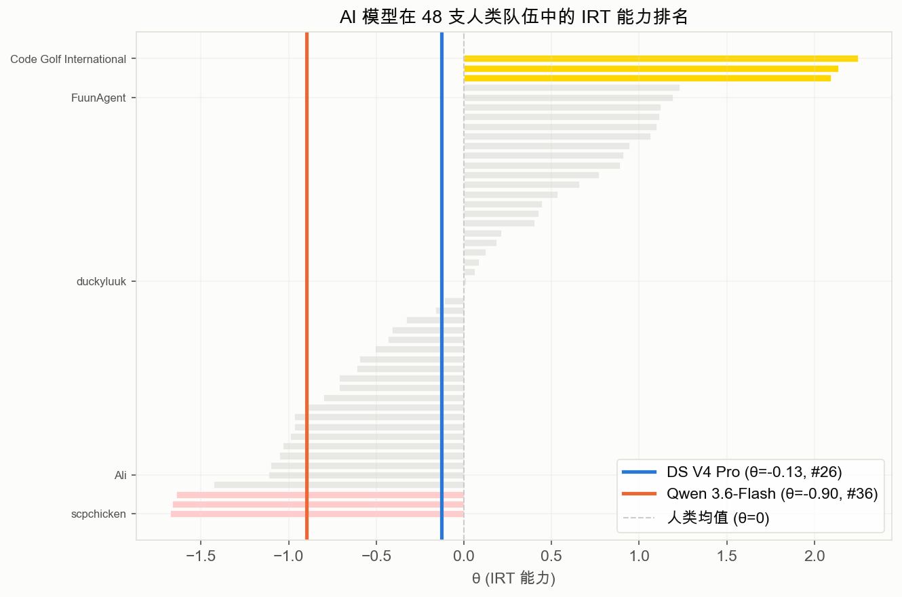

2026-07-22 · DeepSeek V4 Pro · Qwen 3.6-Flash · 96 任务 × 3 seeds · 30 轮 ReAct 循环
极简 ReAct agent：每轮调模型 → 提取 Python 代码 → 沙箱判题（263 个隐藏用例）→ 回传观测结果（AC/WA/RE/TLE + 字节数 + 当前最优）→ 追加到对话上下文。 最多 30 轮，连续 5 轮无改进时提前停止。
| 模型 | API 端点 | 模式 | 文件数 |
|---|---|---|---|
| DeepSeek V4 Pro | api.deepseek.com | deepseek-reasoner（thinking 开启） | 217 |
| Qwen 3.6-Flash | 阿里云 MaaS (Beijing) | qwen3.6-flash | 57 |
| Claude Code | 基线（chenhao benchmark，3 trials） | 96 任务 | |
| Codex | 基线（chenhao benchmark，单 trial） | 96 任务 | |

| 任务 | 最优字节 | 代码 |
|---|---|---|
| task211 | 49B | p=lambda g:[r[::-1]+r for r in g[::-1]+g+g[::-1]] |
| task329 | 54B | p=lambda g:[(m:=len(g)//2)*[0]+[r[m]]+m*[0]for r in g] |
| task177 | 54B | p=lambda g:[y[::-1]for r in g if(y:=[*filter(int,r)])] |
| task267 | 56B | p=lambda g:[[(c:=g[6][0])*(0<x!=c)for x in r]for r in g] |
| task318 | 60B | p=lambda g:[[3*any(z)for z in zip(*t)]for t in zip(g,g[5:])] |
| 任务 | 字节 | 难度 |
|---|---|---|
| task185 | 535B | 困难 |
| task349 | 475B | 困难 |
| task125 | 428B | 中等 |
| task198 | 406B | 困难 |
| task153 | 401B | 困难 |


| 对比 | Δ | W/L/T | p (Wilcoxon) | Cohen's d | 结论 |
|---|---|---|---|---|---|
| DS V4 Pro vs Claude Code | +36B | 15/46/6 | <0.0001 *** | 0.38 | Claude Code 显著领先 |
| DS V4 Pro vs Codex | −6B | 39/22/6 | 0.023 * | 0.06 | DS 略优，效应极小 |
| DS V4 Pro vs Qwen 3.6-Flash | −47% | 19/0/2 | — | — | DS 全胜（21 共同任务） |
| Claude Code vs Codex | −53B | 81/7/8 | <0.0001 *** | 0.49 | Claude Code 碾压 |


| 难度 | 任务数 | AI 均值 | 人类最优均值 | AI/Human 比值 | 组内 Spearman ρ |
|---|---|---|---|---|---|
| 简单 | 14 | 81B | 69B | 1.18x | 0.93 |
| 中等 | 35 | 190B | 99B | 1.90x | 0.82 |
| 困难 | 5 | 231B | 95B | 2.57x | 0.60 |

| 模型 | θ (IRT 能力) | 排名 / 48 | 最接近的人类队伍 |
|---|---|---|---|
| DeepSeek V4 Pro | −0.13 ± 0.82 | 第 27 名 | kambarakun (θ=−0.11) |
| Qwen 3.6-Flash | −0.90 ± 1.68 | 第 37 名 | azakhtyamov (θ=−0.91) |
| 排名 | 指标 | Spearman ρ（与 AI/Human 比值） | 含义 |
|---|---|---|---|
| 🥇 | Q50/Best 比值 | 0.78 | 人类中位数/最优解比——人类方差越大，AI 越挣扎 |
| 🥈 | IRT b2 | 0.76 | 中段难度阈值 |
| 🥉 | CTT median_r | −0.75 | 人类中位数压缩率（越高=越容易=AI 越好） |
| — | IRT a (区分度) | −0.04 | 完全无关！区分好/差人类的题，不能区分好/差 AI |
| — | b4−b1 (难度跨度) | −0.02 | 同样无关 |
当前实验使用通用 code golf prompt。模板 agent_prompt_template.md 提供了更结构化的方案：
这是明确的下一步实验方向——预期在压缩比上会有提升，尤其在中等和困难题上。
实验环境：macOS · Python 3.9 · openai 库 · ThreadPoolExecutor 并行
| 图表 agent_experiments/react/charts/
| 原始数据 agent_experiments/react/results/